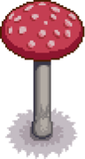
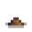
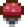

Mushroom Tree
| Mushroom Tree | |
 | |
| Information | |
| Seed | |
| Tapper Product | |
| Growth Time | Variable |
A Mushroom Tree is a tree that can be obtained in 2 ways:
- A Mushroom Tree Seed can be purchased once Qi's Walnut Room is unlocked. When planted, it will grow into a Mushroom Tree.
- A common tree can turn into a Mushroom Tree due to to a rare event in Fall. On each day of Fall, starting on Fall 2, there is a 5% chance of a spawning event being triggered. During the event, the game engine will choose 10 farm tiles at random. If any of those 10 tiles have a fully grown, untapped common tree (or tree stump), then that tree will transform into a Mushroom Tree (or Mushroom Stump). If a mushroom stump is spawned, it will grow into a Mushroom Tree, but not until the following Spring. There are no limits on the number of times this event can occur.
A Mushroom Tree can be chopped down using an axe and will drop 5-6 Red or Purple Mushrooms (plus one for the trunk). It does not yield seeds when shaken or chopped down, but it will spread seeds like a common tree. If unobstructed, seeds spread by a Mushroom Tree have a 20% chance to grow to the next stage each day during Spring, Summer, or Fall. During Winter, Mushroom Tree seeds/saplings do not grow, and fully-grown Mushroom Trees will be reduced to a stump. The following Spring, the stump will regrow to a full tree. Like common trees, the stump may spread seeds to the surrounding area. If hit by lightning, a Mushroom Tree will be reduced to a stump, leaving mushrooms behind, in the same way that common trees leave wood/sap.
A Mushroom Tree can be tapped with a tapper. It yields Red Mushroom, Purple Mushroom, and Common Mushroom when tapped, except during the Winter. During Winter, the Tapper will remain on the tree, despite the tree itself being replaced by a stump. While tappers will remain on stumps, they cannot be placed on stumps during the Winter. Using a Heavy Tapper will not make the tapping faster.
Tapper Product
The time until harvest depends on the season in which the tapper is placed:  2 Nights in Spring or Summer,
2 Nights in Spring or Summer,  1 Night in Fall; except after harvesting a Purple Mushroom, after which the time will always be 1 night. In Winter, the tapper does not produce, but a mushroom will be ready for harvest on Spring 1 of the next year.[1]
1 Night in Fall; except after harvesting a Purple Mushroom, after which the time will always be 1 night. In Winter, the tapper does not produce, but a mushroom will be ready for harvest on Spring 1 of the next year.[1]
The type of mushroom for the first harvest is determined by the season in which the tapper is placed: Common Mushroom in Spring or Summer, Red Mushroom in Fall.
The type of subsequent mushrooms produced is determined by a combination of the type, date, and season of the mushroom previously harvested. When a Common or Red Mushroom is harvested on the 10th or 20th day of a season, the next time it will produce a Purple Mushroom; when a Purple Mushroom is harvested, the next time it will produce a Red Mushroom. When a Common Mushroom is harvested on a day other than the 10th or 20th, the next time it will produce a Common Mushroom; when a Red Mushroom is harvested on a day other than the 10th or 20th, the next time it will produce a Red Mushroom if harvested in Fall, otherwise, the next time it will produce a Common Mushroom.
Below is a table summarizing what mushroom the tapper will produce after a harvest:
| Date of previous harvest | Mushroom previously harvested | ||
|---|---|---|---|
| 10th or 20th of a season | |||
| Other date in Fall | |||
| Other date in Spring or Summer | |||
It means the default mushroom is the Common Mushroom. A Purple Mushroom can only be obtained after harvesting on the 10th or 20th. And a Red Mushroom can be obtained once after harvesting a Purple one, or each day in Fall if a Purple one has been harvested before or if the tapper has been placed during the ongoing season. This implies the player can remove and then replace the tapper anytime in Fall to get Red Mushrooms each day until the end of the season, except for the 11th and 21st.
Mushroom Cap Hat
The Mushroom Cap is a unique hat that has a 1% chance to drop from Mushroom Trees when they are chopped down.
Stages of Growth
| Stage 1 | Stage 2 | Stage 3 | Stage 4 | Stage 5 | Stump |
|---|---|---|---|---|---|
 |
 |

|
Bugs
Common trees tapped with a Heavy Tapper instead of a regular Tapper can turn into Mushroom Trees.
References
- ↑ Duration between harvests and type obtained are defined in Tree::UpdateTapperProduct in the game code. The Mushroom Tree type is 7. Mushroom types indexes are listed in Content\ObjectInformation.xnb.
History
- 1.0: Introduced.
- 1.4: Updated growth stage appearance from trees to mushrooms. Eliminated weeds object obtained by shaking or chopping tree. Changed processing time of tapped mushroom trees so that they’re harvestable in the morning (instead of midway through the day). Fixed issue where harvesting a tapped mushroom tree in winter would cause it to not produce again until mid-Spring, rather than Spring 1.
- 1.5: Can now be planted using a Mushroom Tree Seed.
- 1.6: Can now dig up the Mushroom Tree Seeds spread by the tree. (Undocumented change)
| Trees | |
|---|---|
| Trees | Green Rain Trees • Mahogany Tree • Maple Tree • Mushroom Tree • Mystic Tree • Oak Tree • Palm Tree • Pine Tree |
| Fruit Trees | Apple Tree • Apricot Tree • Banana Tree • Cherry Tree • Mango Tree • Orange Tree • Peach Tree • Pomegranate Tree |
| Seeds | Acorn • Mahogany Seed • Maple Seed • Mossy Seed • Mushroom Tree Seed • Pine Cone • Mystic Tree Seed |
| Fruit | Apple • Apricot • Banana • Cherry • Mango • Orange • Peach • Pomegranate |
| Misc | Large Log • Large Stump • Tea Bush |